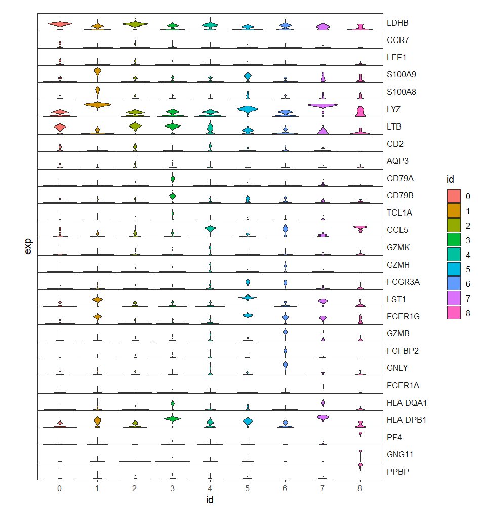
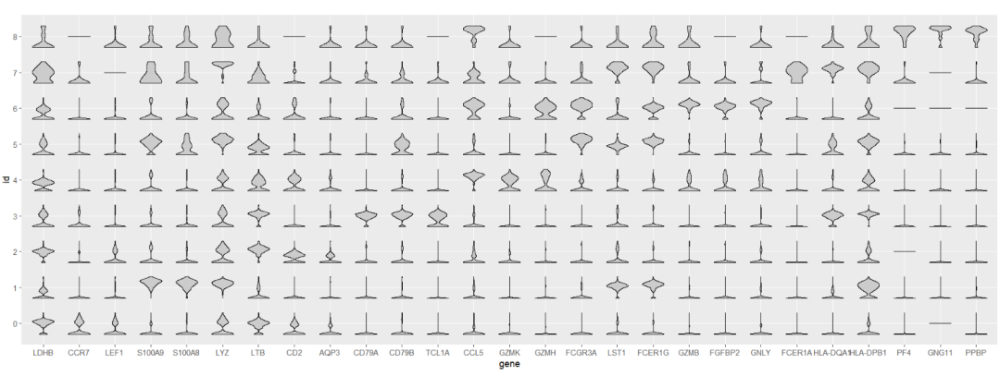
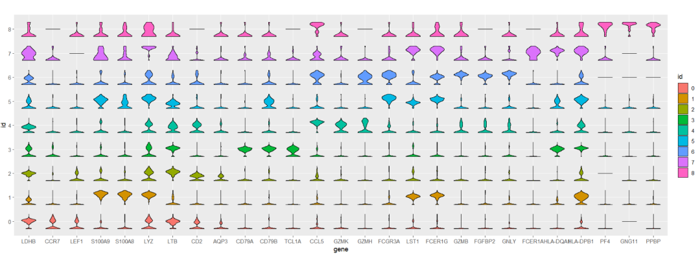
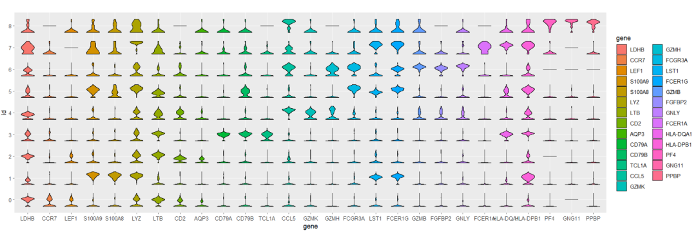
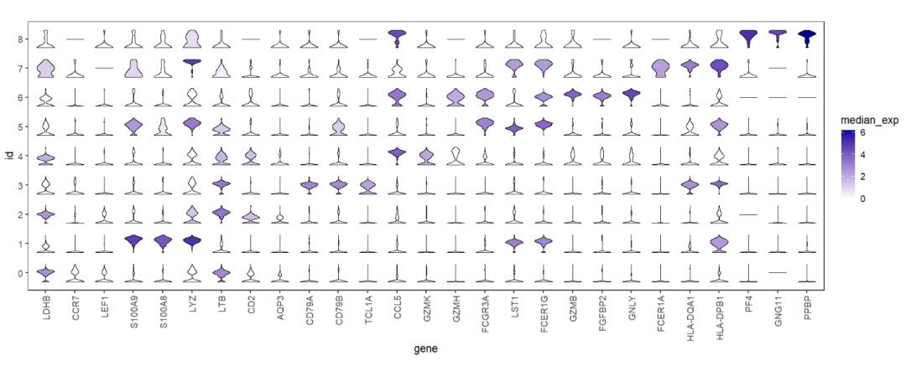
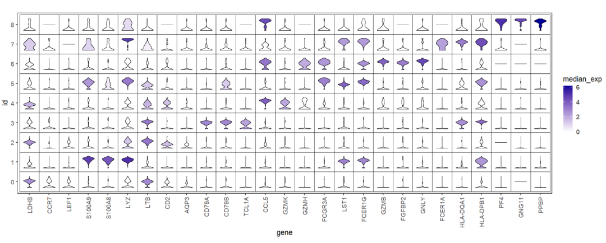
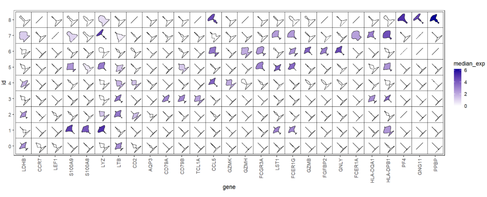

Chapter 8 geom_jjviomap
Here supply a geom_jjviomap function to visualize gene expression or other data in a heatmap-like way. The geom_jjviomap can still retain data distribution informations through violin graphs.
8.1 load test data
Process data first:
# load test data
data(exp.long)
# check
head(exp.long,3)
# id gene exp
# 1 2 LDHB 3.075915
# 2 3 LDHB 2.583047
# 3 2 LDHB 3.387729
# add median expression to group per gene
map_df(unique(exp.long$id),function(x){
tmp <- exp.long %>% filter(id == x)
map_df(unique(tmp$gene),function(j){
tmp1 <- tmp %>% filter(gene == j)
# calculate median expressions
tmp1$median_exp <- median(tmp1$exp)
return(tmp1)
}) -> res
return(res)
}) -> test
# make factor
test$id <- factor(test$id)8.2 examples
First we show the facet violin plots:
# facet plot
ggplot(test,aes(x = id,y = exp)) +
geom_violin(aes(fill = id),trim = T) +
facet_wrap(~gene,ncol = 1,
strip.position = 'right',
scales = 'fixed') +
theme_bw(base_size = 12) +
theme(strip.text.y = element_text(angle = 0,hjust = 0),
panel.grid = element_blank(),
axis.ticks.y = element_blank(),
axis.text.y = element_blank(),
aspect.ratio = 0.05,
strip.background.y = element_rect(fill = NA,color = NA),
panel.spacing = unit(0,'cm'))
Viomap default plot:
# default
ggplot(test,aes(x = gene,y = id)) +
geom_jjviomap(aes(val = exp),
width = 1) +
coord_fixed()
Mapping with cluster:
# aes cluster
ggplot(test,aes(x = gene,y = id)) +
geom_jjviomap(aes(val = exp,fill = id),
width = 1) +
coord_fixed()
Mapping with gene:
# aes gene
ggplot(test,aes(x = gene,y = id)) +
geom_jjviomap(aes(val = exp,fill = gene),
width = 1) +
coord_fixed()
The most important point that we need to show the gene expression variance across the different clusters, we can use median expression to fill the violin color:
# aes median expressions
ggplot(test,aes(x = gene,y = id)) +
geom_jjviomap(aes(val = exp,fill = median_exp),
width = 1) +
scale_fill_gradient(low = 'white',high = '#04009A') +
theme_bw(base_size = 14) +
theme(panel.grid = element_blank(),
axis.text.x = element_text(angle = 90,hjust = 1,vjust = 0.5)) +
coord_fixed()
Add rect background:
# add rect
ggplot(test,aes(x = gene,y = id)) +
geom_jjviomap(aes(val = exp,fill = median_exp),
width = 1) +
scale_fill_gradient(low = 'white',high = '#04009A') +
theme_bw(base_size = 14) +
theme(panel.grid = element_blank(),
axis.text.x = element_text(angle = 90,hjust = 1,vjust = 0.5)) +
coord_fixed() +
geom_tile(fill = 'transparent',color = 'black')
You can rotate the violins:
# rotate the violins
ggplot(test,aes(x = gene,y = id)) +
geom_jjviomap(aes(val = exp,fill = median_exp),
angle = 45,
width = 1) +
scale_fill_gradient(low = 'white',high = '#04009A') +
theme_bw(base_size = 14) +
theme(panel.grid = element_blank(),
axis.text.x = element_text(angle = 90,hjust = 1,vjust = 0.5)) +
coord_fixed() +
geom_tile(fill = 'transparent',color = 'black')